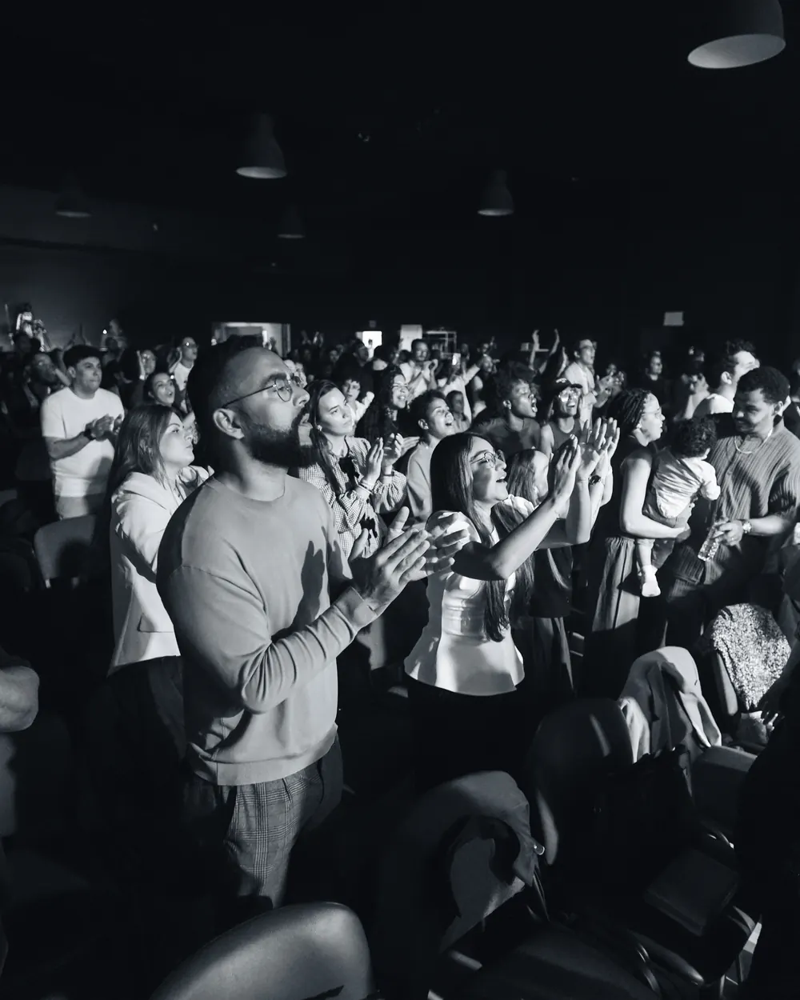
Todas as semanasCulto da Família
Domingo18h30
Toda a igreja reunida, com louvor, Palavra e oração.
Igreja Batista Cristã Portugal · Agualva-Cacém
Somos a IBAC, uma igreja batista em Agualva-Cacém. Reunimo-nos todos os domingos às 18h30, na Rua da Bela Vista, e há sempre um lugar guardado para si.

Todas as semanasCulto da Família
DomingoToda a igreja reunida, com louvor, Palavra e oração.
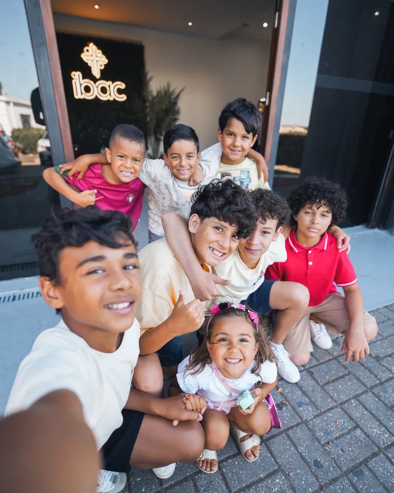
Onde estamos
Rua da Bela Vista 25Armazém 3. Há lugar para as crianças e para toda a família.
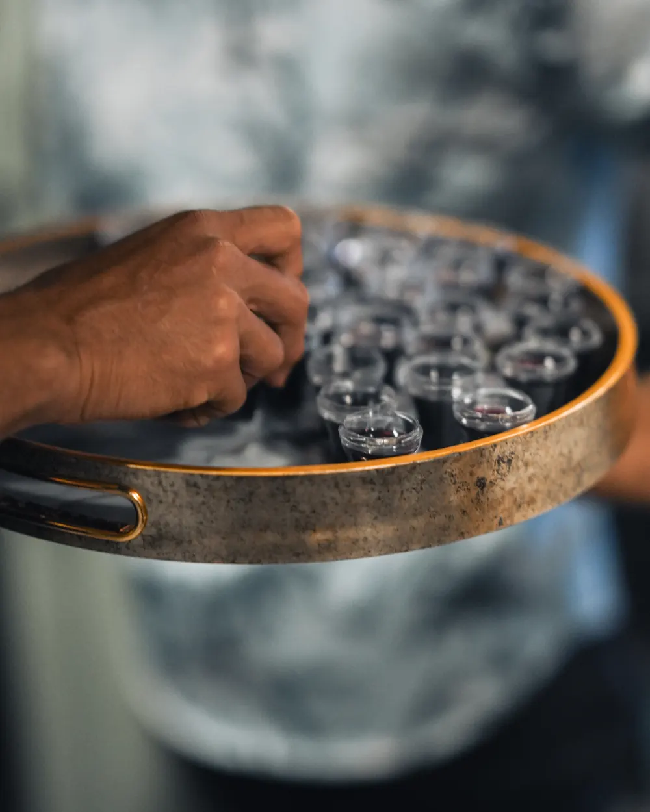
Ceia do Senhor
1.º domingoMemória do corpo e do sangue de Cristo, celebrada em conjunto.
A segunda Imersão de Finanças, com o Pr. Hanniel Pontes. Uma noite para olhar para as contas da casa à luz da Palavra.
Um Culto da Família diferente, com a guitarra e a Palavra do Pr. Juninho Afram. Traga a família e quem precisa de ouvir.
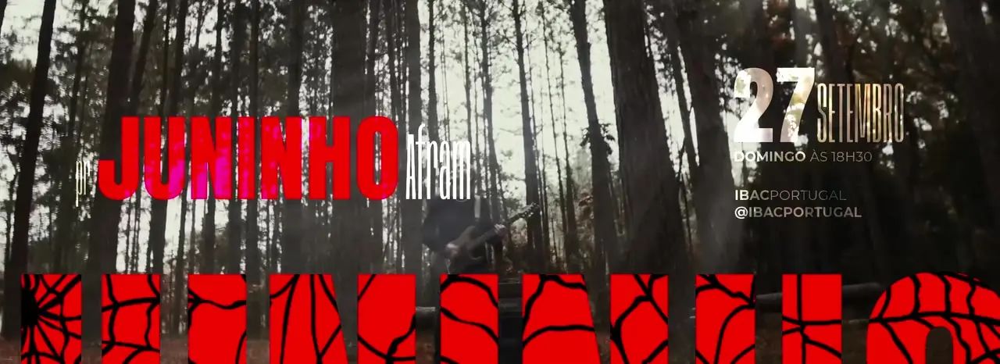
Dois dias para a nova geração desta casa: louvor, Palavra e gente a caminhar na mesma direção. Traga os seus amigos.
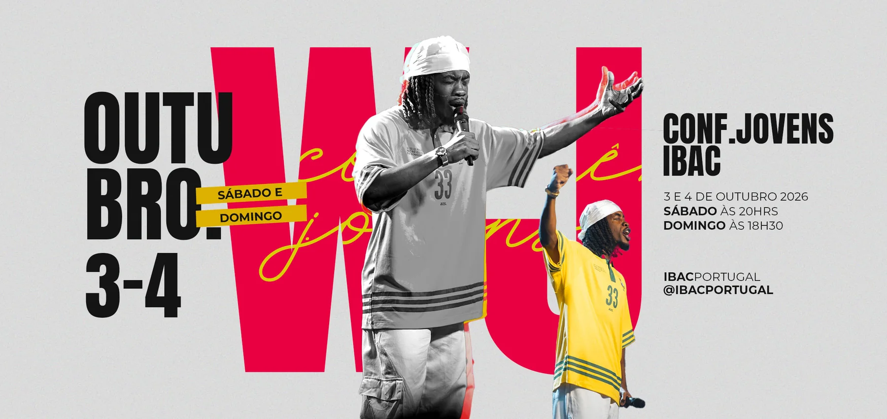
O que nos move
Fomos alcançados pelo amor de Deus, feitos filhos e recebidos na família de Cristo. Tudo o que fazemos começa aqui.
Ninguém foi feito para caminhar sozinho. Nesta casa há mesa, há nome e há gente que caminha consigo.
Aquilo que recebemos não fica connosco. Partilha-se em serviço, em cuidado e em missão.
A Igreja
A IBAC é uma igreja batista em Agualva-Cacém, no concelho de Sintra. Nasceu do desejo simples de ver pessoas encontrarem em Cristo um Pai, uma casa e um propósito.
Cremos que a igreja não é o edifício nem a programação. É gente que Deus juntou para caminhar em conjunto: famílias inteiras, quem chegou há anos e quem entra pela primeira vez, portugueses e gente de fora que aqui encontrou casa.
Ensinamos a Palavra com clareza, celebramos a Ceia do Senhor no primeiro domingo de cada mês e cuidamos uns dos outros ao longo da semana. O que aprendemos ao domingo procura sair pela porta connosco.
Assim nós, que somos muitos, somos um só corpo em Cristo, mas individualmente somos membros uns dos outros.
Romanos 12:5
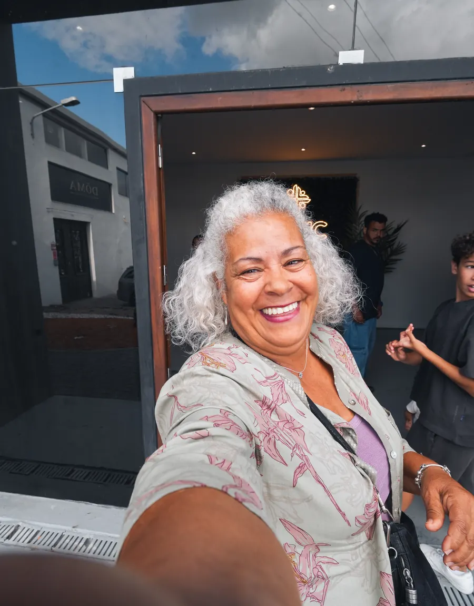
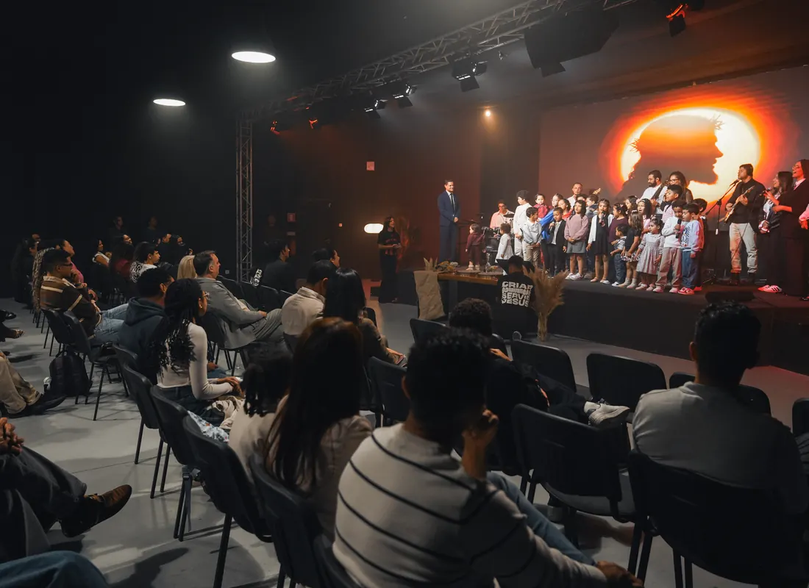
Novo por aqui
Vir a uma igreja pela primeira vez levanta perguntas normais. Aqui fica, sem rodeios, o que acontece num domingo na IBAC.
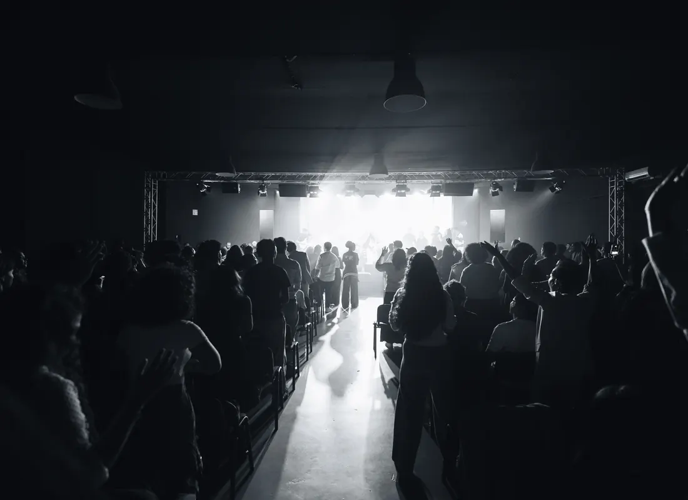
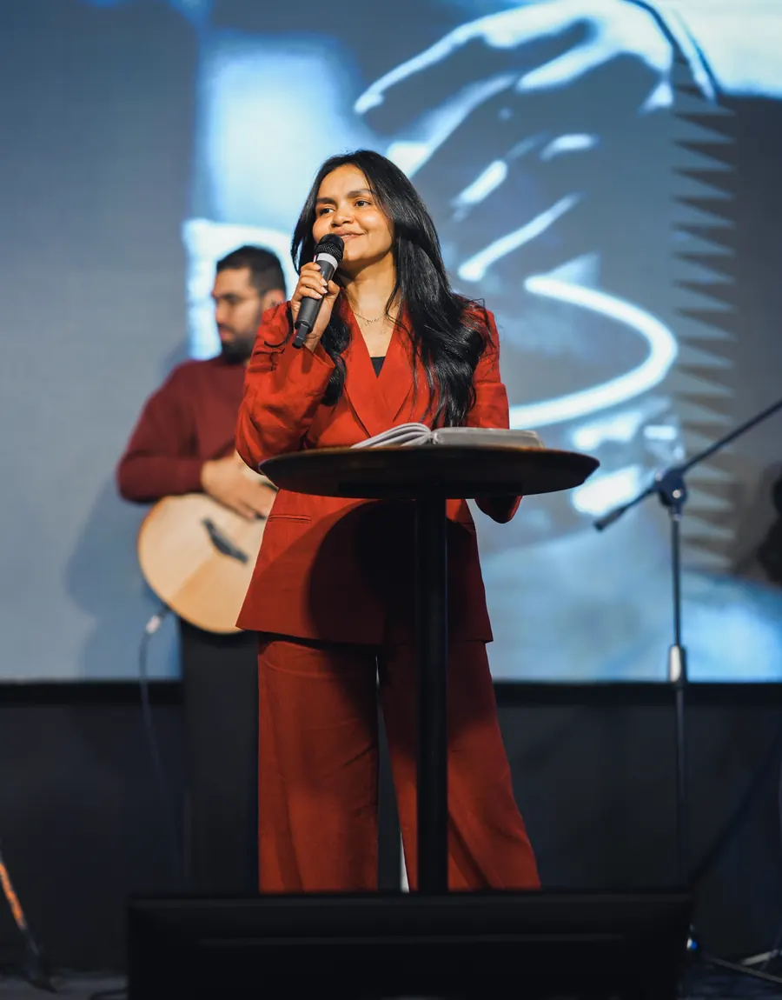
Chegue uns minutos antes das 18h30. Alguém da equipa de recepção recebe-o à porta e ajuda a encontrar lugar. Não há traje próprio, não é preciso conhecer ninguém e ninguém vai pedir-lhe para se apresentar em público.
Começamos a cantar juntos. Cante, ouça em silêncio, ou fique apenas a observar. Está tudo bem. As letras aparecem no ecrã e a equipa de louvor conduz a partir do palco.
Uma mensagem bíblica, clara e aplicada à vida de hoje. Traga a sua Bíblia se tiver, ou acompanhe pelo ecrã. Se ficar com perguntas, há sempre alguém disponível no fim para conversar.
Ficamos a conversar. É o melhor momento para pedir oração, falar com um pastor, perguntar pelos ministérios ou simplesmente conhecer gente. Ninguém sai daqui sem ser cumprimentado.
Ministérios
Equipas que fazem a casa funcionar e que cuidam de pessoas ao longo da semana. Há sempre espaço para quem quer dar o primeiro passo.
Conduzir a igreja na adoração, com preparação e com o coração.
Cuidar das crianças e ensinar a Palavra na linguagem delas.
Uma geração que descobre Cristo e aprende a servir cedo.
Cuidar dos casamentos e das famílias que formam esta casa.
Oração e jejum pela igreja, pela cidade e pelas nações.
Levar o evangelho para além das nossas quatro paredes.
Servir quem precisa, com mãos abertas e com dignidade.
Zelar pelo espaço, pela ordem e por quem chega.
A primeira cara da casa. Acolher com atenção e com nome.
Contar o que Deus faz e levar a mensagem mais longe.
Acompanhar, aconselhar e cuidar da vida espiritual da igreja.
Organizar a casa por dentro, para que tudo aconteça a horas.
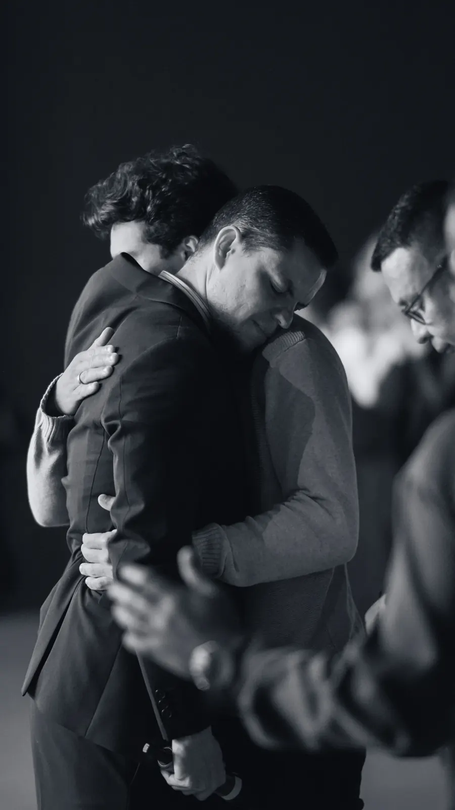
Servir na IBAC
Servir na igreja é mais do que ocupar uma função ou cumprir uma escala. É uma decisão livre, motivada pelo amor a Cristo, de honrar a Deus e cuidar de pessoas.
Servi ao Senhor com alegria.
Salmos 100:2
Agenda
Domingo · 18h30
Todas as semanas1.º domingo do mês · durante o culto
MensalSábado, 26 de setembro · 19h30 · Pr. Hanniel Pontes
Evento especialDomingo, 27 de setembro · 18h30
Culto especial3 e 4 de outubro · sábado 20h00, domingo 18h30
Evento especialHorário por confirmar
Por confirmarHorário por confirmar
Por confirmarData por confirmar
Por confirmarEventos especiais, batismos e conferências são anunciados no Instagram @ibacportugal.
Dízimos e ofertas
Tudo o que entra sustenta a missão, o espaço e o cuidado com as pessoas. Cada contribuição é dada com alegria, livremente e sem constrangimento.
MBWAY
+351 926 615 020
Transferência bancária
PT50 0010 0000 6113 1700 0010 4
Na igreja
Durante o culto
Ao domingo, no momento das ofertas, ou entregue na secretaria.
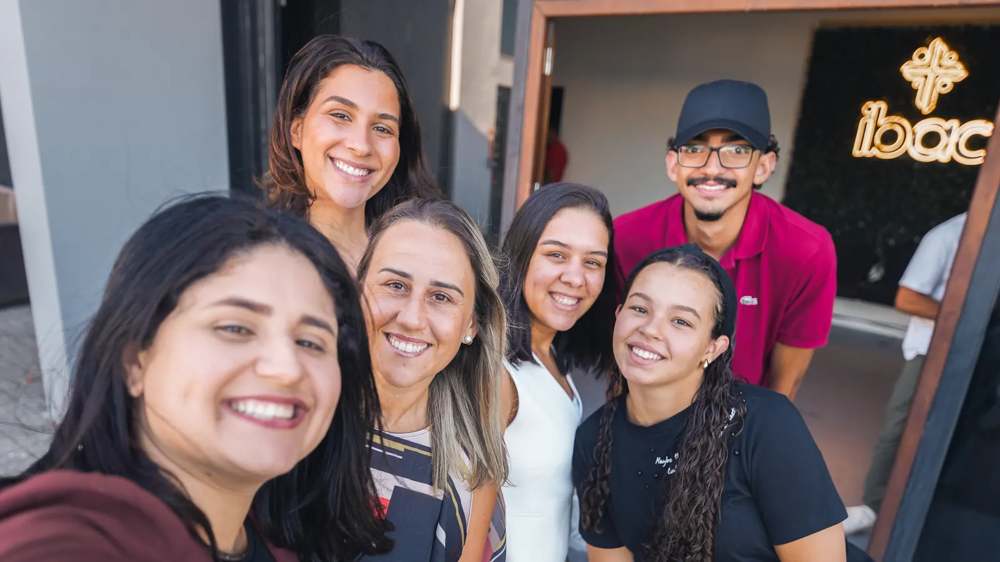
Este domingo
Venha como está. Traga a família, traga as perguntas. Às 18h30, na Rua da Bela Vista 25, em Agualva-Cacém.
Contactos
Rua da Bela Vista 25, Armazém 3
2735-184 Agualva-Cacém
Domingo às 18h30